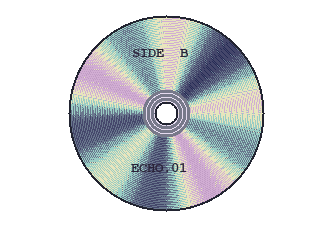

Soft Signal — Portfolio.exe
Soft Signal — Portfolio.exe SOFT SIGNAL
Soft
Signal.
独立电子音乐人
短促的鼓点，慢慢消散的合成音。三段原创电子小样，写给那些还亮着灯的深夜。

Echo Buffer
C:\Studio\Audio3 tracks · v1.0.0
 试听曲库 — AudioSoft Signal — Portfolio.exe
试听曲库 — AudioSoft Signal — Portfolio.exe独立电子音乐人
短促的鼓点，慢慢消散的合成音。三段原创电子小样，写给那些还亮着灯的深夜。

试听曲库 — Audio 电子音乐
电子音乐 植物标本
植物标本 旅行邮票
旅行邮票